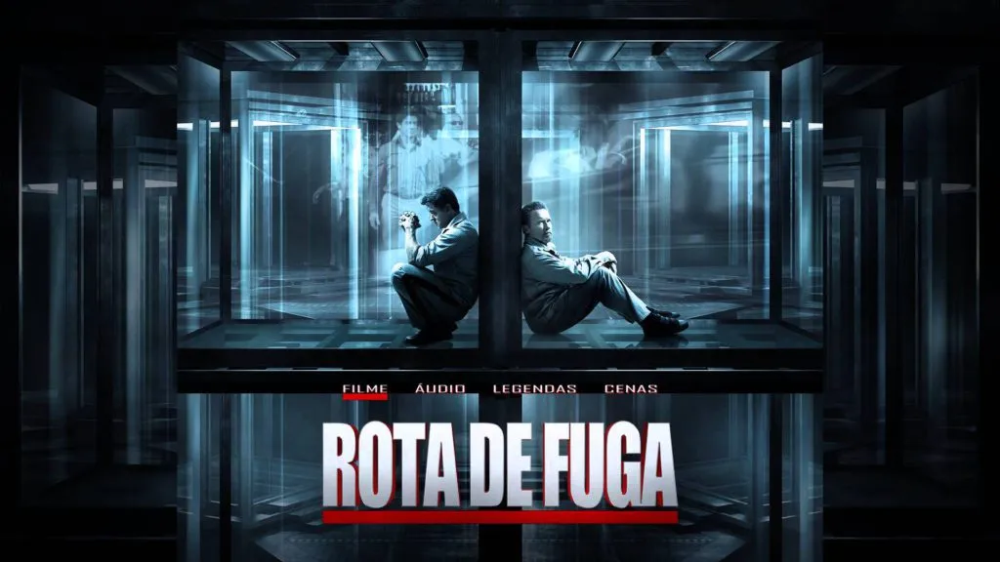

Diretor: Mikael Håfström
Data de lançamento: 11 de outubro de 2013
Ray Breslin é a maior autoridade que existe quando se trata de segurança. Após analisar diversas prisões de segurança máxima, ele desenvolve um modelo à prova de fugas. No entanto, Ray acaba sendo preso, mas é enviado justamente para a prisão que ele mesmo criou. Lá, ele precisa encontrar uma brecha não imaginada até então, que possa permitir sua fuga.
Clique aqui para acessar o elenco